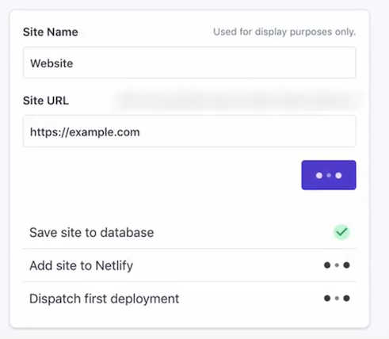
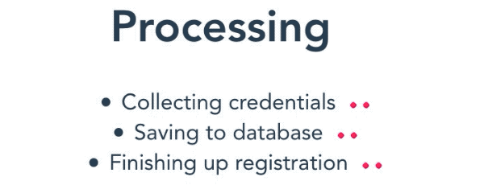

Using promises to indicate progress to waiting users
- Published: 07-09-2019
Introduction
Recently, I got inspired by this tweet by Miguel Piedrafita in which he stresses the importance of including some form of progress indicators whenever your application needs to perform one or more slow (background) tasks/processes. In his example, the users' website needs to be saved to a database, added to a deployment platform and dispatched for first deploy.

Like Miguel mentions, by adding small indicators to each of these running processes your users are reassured something is happening and they just need to be patient.
After I reading this tip, I wondered how to achieve these progress indicators. In this post I want to share my approach, using VueJS.
I do not claim this to be the best available option and I'm open to alternative solutions and improvements.
The code is available on CodeSandbox.
My approach
Since we'll need to update the progress in realtime, I like to defer to VueJS, my javascript framework of choice.
Ultimately we want to display a list of tasks, which are processed sequentially. To this extent we'll leverage javascript's async/await functionality. Additionally, the tasks should indicate whenever they're finished and show an epic spinner (by Epicmax) in the meantime. An example of our desired end result is shown below:

Object representation of a single process
To achieve this, I was thinking of the following object representation of a single process: we specify a **name**, the **work** that needs to be done with a callback (returning a Promise) and lastly keep track of its state through a **finished** boolean.
{
name: 'Collecting credentials',
work: () => new Promise((resolve) => {
// perform the task
// resolve the promise
resolve()
}),
finished: false,
}
Note: we're only passing a resolve argument to the Promise object for now, ignoring potential failures. Make sure to check out the "not-so-happy-path" section in the Conclusion on managing (potential) errors.
Building the Vue component
With this approach and end goal in mind, we can shape our basic Vue component, in which we'll register three processes: 'Collecting credentials', 'Saving to database' and 'Finishing up registration'. For this demo, let's simulate performing work by a setTimeout function, waiting for 2 seconds (2000 ms):
<script>
// if we want to use the epic spinner, let's import it here
import { LoopingRhombusesSpinner } from 'epic-spinners';
export default {
// and declare the epic spinner component here
components: {
LoopingRhombusesSpinner
},
data() {
return {
processes: [
{
name: 'Collecting credentials',
work: () => new Promise(resolve => {
setTimeout(() => resolve(), 2000);
}),
finished: false,
},
{
name: 'Collecting credentials',
work: () => new Promise(...),
finished: false,
},
{
name: 'Collecting credentials',
work: () => new Promise(...),
finished: false,
},
]
}
}
}
</script>
Now we have access to our loading spinner and the processes property, we can generate a list of processes in the template:
<template>
<ul>
<li :key="process.name" v-for="process in processes">
{{ process.name }}
<span v-if="process.finished">✓</span>
<looping-rhombuses-spinner v-else
style="display: inline-block;"
:animation-duration="2500"
:rhombus-size="6"
color="#ff1d5e"
/>
</li>
</ul>
</template>
With the template in place, we need to make sure that our processes start whenever the page is loaded. We can do so by hooking in to Vue's mounted() lifecycle hook.
<script>
export default {
components: {
// ...
},
data() {
//...
},
mounted() {
this.initialize();
},
methods: {
async initialize() {
for await (const process of this.processes) {
await process.work();
process.finished = true;
}
}
}
}
</script>
In our initialize() method (which is called when the component was created) we want to loop over the processes and perform the work of each process in sequential order by handling the promises one by one using await before continuing to the next task. This requires that we declare the method as async initialize(). Since we are working with Promises, we can not simply use a forEach loop to iterate over the processes. Instead, we use a for/of loop (MDN reference) which allows us to iterate over interable objects (in our case the asynchronous processes). After the work has been performed, we'll mark a process as finished which dynamically updates the loading spinner to a checkmark.
Conclusion
We've made a basic process indicator Vue component, in which we can define multiple tasks by declaring a name, (initial) state and a callback. The tasks are then executed sequentially and their "finished" state is updated in realtime.
For our demo purposes we've simulated the workload with a setTimeout(), however in real life this would probably be an AJAX call which could look as follows (using axios):
{
work: () => new Promise(resolve => {
axios.get('https://johnbraun.blog').then((response) => {
// (optional) do something with the response ...
resolve();
})
})
}
💡 You might want to add additional tasks at runtime, which you can easily do by adding the following method to your component:
<script>
// ...
methods: {
addProcess(name, callback) {
this.processes.push({
name: name,
work: callback,
finished: false,
});
return this;
}
}
</script>
Some last remarks
Handling queued processes in the backend
Now, there might be situations where the processes are queued on your backend. In that scenario, the above discussed frontend solution doesn't suffice and I would advise to defer to a websocket implementation. Websockets allow realtime communication from the backend to the frontend. You might have a look at my post on using websockets in Laravel, which explains how to communicate changes in a queued job back to the frontend.
The not-so-happy path
So far, we only discussed the happy path, but let's be realistic: what if a process fails? Javascript's Promise() object accepts - in addition to 'resolve' - another argument 'reject' to indicate failure.
In this regard, we should dissect the code for a single "process" in our component into a part that resolves the promise when succesful, and rejects the promise upon failure.
{
name: 'Saving to database',
work: () => new Promise((resolve, reject) => {
axios.get('https://www.johnbraun.blog')
.then((response) => resolve(response))
.catch((error) => reject(error));
}),
finished: false
}
Aditionally, you might want to halt all other sequential processes since we're dealing with a failure. One way to go about it is to delete all remaining processes from the array, making sure the .work() method is not called. We also should store the process which failed to show a big red cross.
To accomdate for potential failure, one way to go about it is to let the user know which process failed (with a big red cross) and delete all remaining, unexecuted processes from the array preventing the remaining .work() methods being called. Additionally, we store the process in an 'errors' property so we can show the user which process failed.
These changes are summarized in the code block below, and also available on the Codesandbox page.
<template>
<div>
<ul>
<li :key="process.name" v-for="process in processes">
{{ process.name }}
<span v-if="process.finished" style="color: green;">✓</span>
<span v-if="errors.includes(process)" style="color: red;">✗</span>
<looping-rhombuses-spinner v-if="!process.finished && !errors.includes(process)"
style="display: inline-block;"
:animation-duration="2500"
:rhombus-size="6"
color="#ff1d5e"
/>
</li>
</ul>
<p v-if="errors.length > 0" style="color:red;">
Something went wrong, so we bailed...
</p>
</div>
</template>
<script>
export default {
data() {
return {
// keep track which process(es) failed
errors: []
}
},
methods: {
async initialize() {
for await (const process of this.processes) {
await process.work()
.then(() => {
this.markFinished(process);
})
.catch((reject) => {
this.errors.push(process);
this.haltIteration(process);
});
},
haltIteration(process) {
// get the current item's index
let index = this.processes.indexOf(process);
// determine how many processes are left
let items = this.processes.length;
// remove other processes from being executed.
this.processes.splice(index + 1, items - 1);
}
}
}
</script>